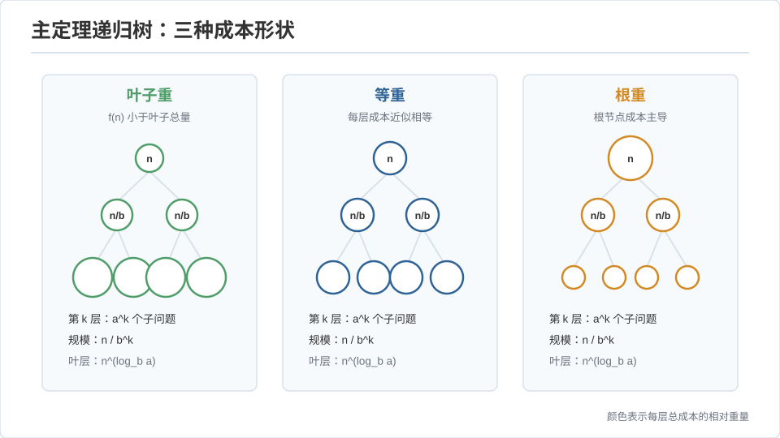
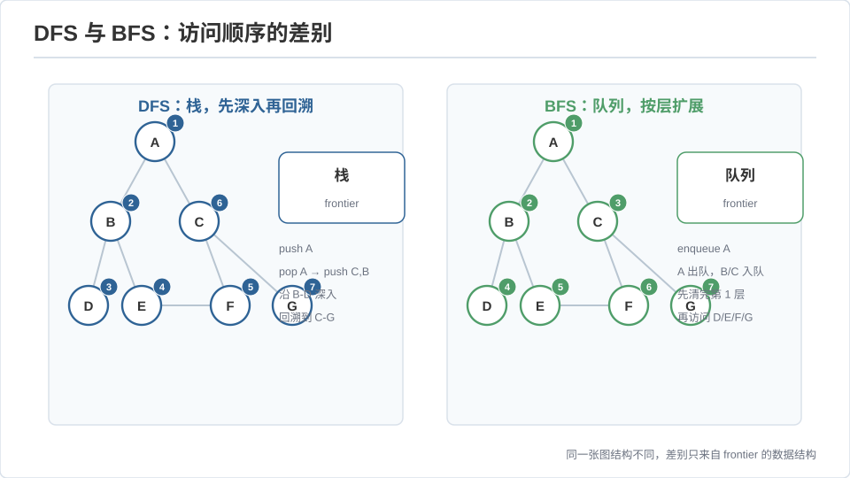
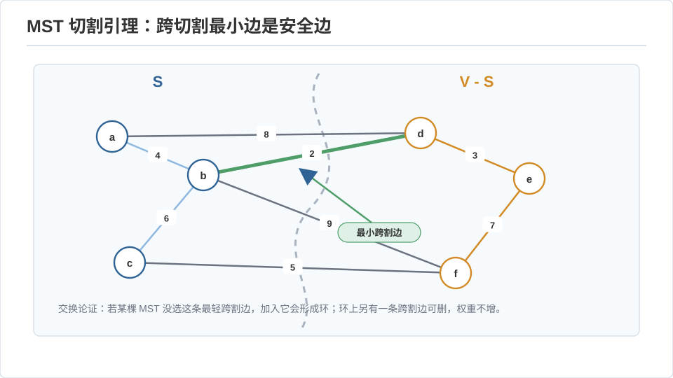

算法 I · 分治与图算法
对标：CS170（UC Berkeley）/ CLRS 第 2–4、22–24 章 ｜ 前置：数学站离散/图论线、概率线（期望分析） 算法课的第一课不是"背模板"，是把问题结构翻译成复杂度。对你——应用数学出身——这条线更像换记号复习：递归树是求和、分治是主定理、图算法是线性代数与序理论的离散化。本页立三样地基：分治的复杂度会计（主定理）、图的两种遍历骨架（DFS/BFS 及其代数结构）、最短路的松弛统一视角。
1. 分治与主定理：把递归读成求和
分治三步：分（子问题）、治（递归）、合（合并）。代价满足递归式
\(a\) = 子问题数、\(b\) = 规模缩减因子、\(f(n)\) = 分与合的代价。主定理【推导思路】：把递归树画出来——第 \(k\) 层有 \(a^k\) 个节点、每个规模 \(n/b^k\)、单层合并代价 \(a^k f(n/b^k)\)，共 \(\log_b n\) 层。总代价是这个几何级数的和，三种情形取决于"叶子总量 \(n^{\log_b a}\)"与"\(f(n)\)"谁主导：
三个样板：归并排序 \(2T(n/2)+O(n) \Rightarrow \Theta(n\log n)\)（中间情形）；二分搜索 \(T(n/2)+O(1)\Rightarrow\Theta(\log n)\)；Karatsuba 大整数乘 \(3T(n/2)+O(n)\Rightarrow \Theta(n^{\log_2 3})\approx n^{1.585}\)——"三次乘法代替四次"把乘法从 \(n^2\) 拉下来，是分治省一次子问题的经典胜利（Strassen 矩阵乘同理：\(7\) 而非 \(8\) 次子乘 \(\Rightarrow n^{\log_2 7}\)）。

读法：主定理就是"几何级数被首项还是末项主导"的判别式。你在数学分析里做过无数次，这里只是把 \(n\) 换成问题规模。
2. 图的两种遍历：DFS/BFS 是同一算法的两种队列
图 \(G=(V,E)\)，\(n=|V|\)、\(m=|E|\)。遍历骨架只有一个：维护一个待访问集合，每次取一个点、松开它的邻居。取的方式决定一切——栈 = DFS，队列 = BFS。二者都 \(O(n+m)\)（每点每边各处理常数次）。
- BFS：按层扩展 ⇒ 无权图最短路（第一次到达即最短，因为层数单调）。
- DFS：深入到底再回溯 ⇒ 产生时间戳（进入/离开），由此得到边的分类（树边/前向/后向/横叉）。后向边的存在 ⟺ 有环（DAG 判定）；离开时间的逆序 = 拓扑排序；DFS 森林 + 时间戳给出强连通分量（Tarjan/Kosaraju，\(O(n+m)\)）。
代数视角（🔗 数学站线代/图论）：BFS 层 = 邻接矩阵幂 \(A^k\) 首次非零的位置；连通性 = \((I+A)^{n-1}\) 的非零模式。图算法是布尔半环上的线性代数。

3. 最短路：一切都是"松弛"
带权图求 \(s\) 到各点最短距离 \(d[v]\)。核心操作只有一个——松弛（relax）：若 \(d[u]+w(u,v) < d[v]\) 则更新 \(d[v]\)。不同算法只是松弛的调度顺序不同：
| 算法 | 前提 | 调度 | 复杂度 | 一句话 |
|---|---|---|---|---|
| BFS | 无权 | 队列（按层） | \(O(n+m)\) | 层数即距离 |
| Dijkstra | 非负权 | 优先队列（每次取当前最近的定稿） | \(O(m\log n)\) | 贪心：最近点的距离不会再变 |
| Bellman–Ford | 允许负权 | 全边松弛 \(n-1\) 轮 | \(O(nm)\) | 第 \(n\) 轮还能松弛 ⟺ 有负环 |
| Floyd–Warshall | 全源 | DP：中转点 \(k\) 逐个放开 | \(O(n^3)\) | \(d^{(k)}_{ij}=\min(d^{(k-1)}_{ij}, d^{(k-1)}_{ik}+d^{(k-1)}_{kj})\) |
Dijkstra 的正确性【骨架】：用归纳——每次从优先队列取出的点 \(u\)，其 \(d[u]\) 此刻已是最终值。反证：若存在更短路径，该路径上第一个"未定稿"点的距离 \(\le d[u]\)，与 \(u\) 是队列最小矛盾（依赖非负权：负权会让"绕远反而更短"，贪心失效，此时退回 Bellman–Ford）。
读法：图论的问题往往归结为"给一个偏序/度量，怎样高效传播它"。最短路是度量的传播，拓扑排序是偏序的线性化，MST（下段）是另一种贪心传播。
4. 最小生成树：两个贪心，一个拟阵
MST：选 \(n-1\) 条边连通所有点、总权最小。两个经典贪心都对：
- Kruskal：按权升序加边，不成环就要——用并查集判环（近乎 \(O(m\alpha(n))\)，\(\alpha\) 是反 Ackermann，实际 \(\le 4\)）。
- Prim：从一点长树、每次加最短的"跨界边"（优先队列，\(O(m\log n)\)）。
两者都对的深层原因：MST 是拟阵（matroid）上的贪心最优——图的"无环边集"构成拟阵的独立集，而贪心在拟阵上恒最优（这是贪心算法可靠性的完整理论边界：不是拟阵结构的问题，贪心就可能错）。🔗 这和数学站的组合优化/LP 对偶接得上：MST 也是一个整数规划，其 LP 松弛恰好整数最优。
切割引理（正确性核心）【推导】：对任意把 \(V\) 分成两部分的切割，跨切割的最小权边一定在某棵 MST 中。证明用交换论证：若某 MST 不含这条最小跨边 \(e\)，把 \(e\) 加进去成环，环上必有另一条跨边 \(e'\)，\(w(e')\ge w(e)\)，换掉 \(e'\) 得到不更差的生成树。\(\blacksquare\)

5. 练习与要点
例 1（主定理反用） 你想设计一个 \(\Theta(n\log n)\) 的分治算法，合并代价 \(O(n)\)，问子问题该怎么分？答：\(a=b\)（如 \(2T(n/2)\)），落在中间情形——这是"为什么分治排序都是二路/多路平衡"的复杂度理由。
例 2（DFS 抓环） 给一个课程依赖图判能否修完（LeetCode "课程表"）：DFS 找后向边 / BFS 拓扑排序删入度为 0 的点——两种写法对应本页两个遍历骨架，都是 \(O(n+m)\)。
例 3（松弛的统一） 手推：把 Dijkstra 的优先队列换成普通队列、且允许一个点多次入队，得到什么？答：SPFA（队列版 Bellman–Ford）——说明这几个算法真的是同一个松弛框架下换调度。\(\blacksquare\)
▶ 实验 L 系列预告：本线的动手在后面几页的具体数据结构（B+ 树、Raft）里。这一页的算法请直接在 LeetCode 上按"分治 / 图 / 最短路"三个标签各刷 5 题——你的数学直觉会让这批题非常快。
下一页：网络流与线性规划——最大流最小割定理，以及它为什么就是 LP 对偶在图上的化身。